Legal tech · B2B · Web app
One request for every document a property sale needs
A platform where Australian sellers and agents order the legal documents needed to list a property, and staff collect them. In about four weeks I turned a pile of AI-written briefs into one simple model and designed the customer, agent and manager apps around it.

Context
Velocity Documents prepares the documents a seller needs before listing a property: title searches, council certificates, strata records. Its system was more than ten years old and so hard to use that staff ran most orders by hand; only a small share went through it. The team had a stack of AI-written briefs for a much bigger platform, and the timeline had just been cut from 12 weeks to 4–5.
Goal
Agree on a model the team could build in that time, and design the flows for the three people who touch an order: the seller, the agent and the staff member who collects the documents.
Outcome
The platform is in development on this model, and part of it already runs with real documents so the client can test it. Sellers, agents and staff work with the same request, each from their own side.
Constraints
- The timeline was cut from 12 weeks to 4–5
- Most of the brief was written by AI, and much of it couldn’t be built in that time
- Searches and providers differ by state and property type
- Search fees depend on the council or authority, so many prices are a range
Back to the simple version
Before I joined, the team had tried to start from an AI-built copy of the old portal and got stuck. There were also several AI-written briefs: matter workspaces, AML onboarding, a seven-step tracker, a separate solicitor review. I went back to the CEO and wrote the process down in his words: the seller enters an address, gets a quote and pays; staff collect each document; the package is checked; the seller gets an email. As a team we cut the rest. Solicitors didn’t need their own role either, because the people who check the package already work there.
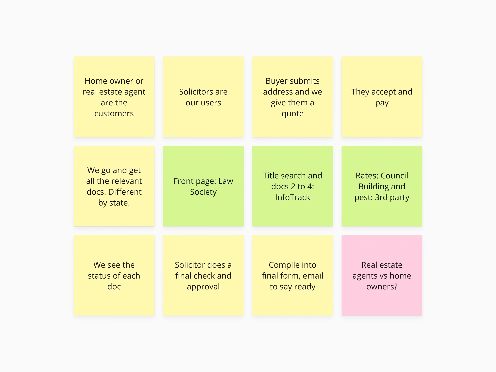
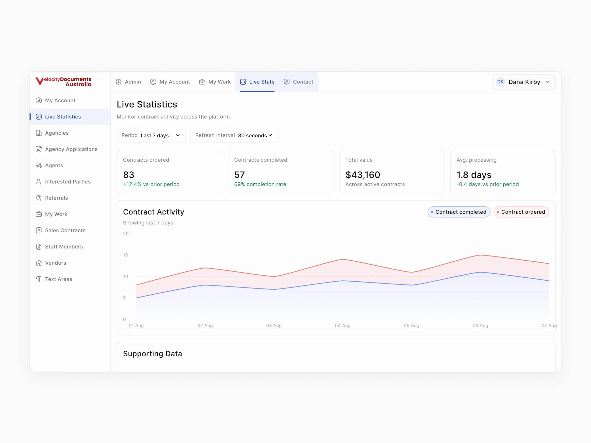
Wireframes first, then code
I started with wireframes in Claude Design, then built the customer, agent and manager apps with Claude Code on one design system ported from the Figma file. The manager app ran on Vercel as a working prototype the team could open, and the code went to the developers as the base for production.
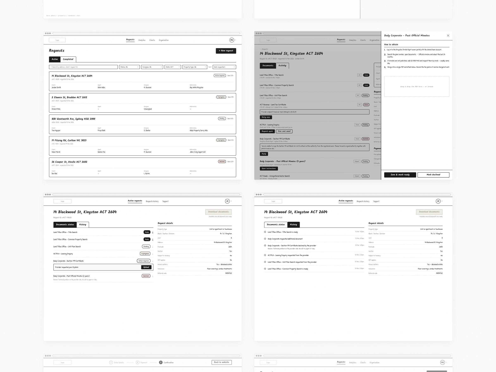
A request is a list of documents
The old portal treated a sale as one contract record. Its status was spread across seven checkboxes and about fifteen action links, and the searches behind the contract weren’t in the system at all. But one sale needs several documents from different places: some come back through a provider’s API, others are ordered and uploaded by hand. I suggested calling the order a request and showing it as a list of documents, each with its own source and status, so a manager sees at once what is ready and what is stuck. Later we folded email requests into the manual channel.
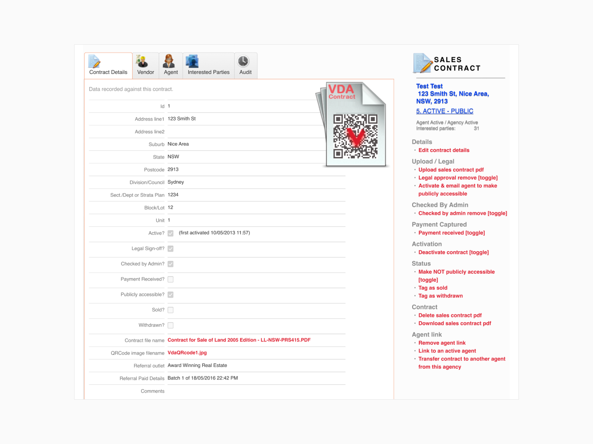
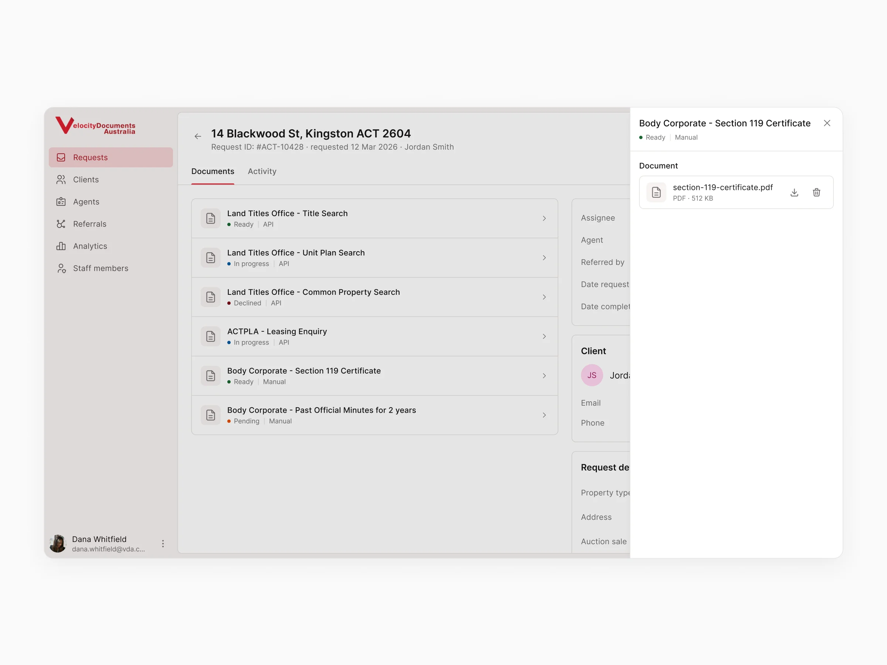
One request, three apps
The seller, the agent and the manager look at the same order from different sides, so I kept one request model across all three apps. The seller’s request page is the manager’s page without the actions. An agent places an order for a client through the same flow the seller uses, only without the account steps. The manager’s menu went from the old portal’s 12 sections to 6. Shared screens meant one design system and fewer things for the developers to build twice.
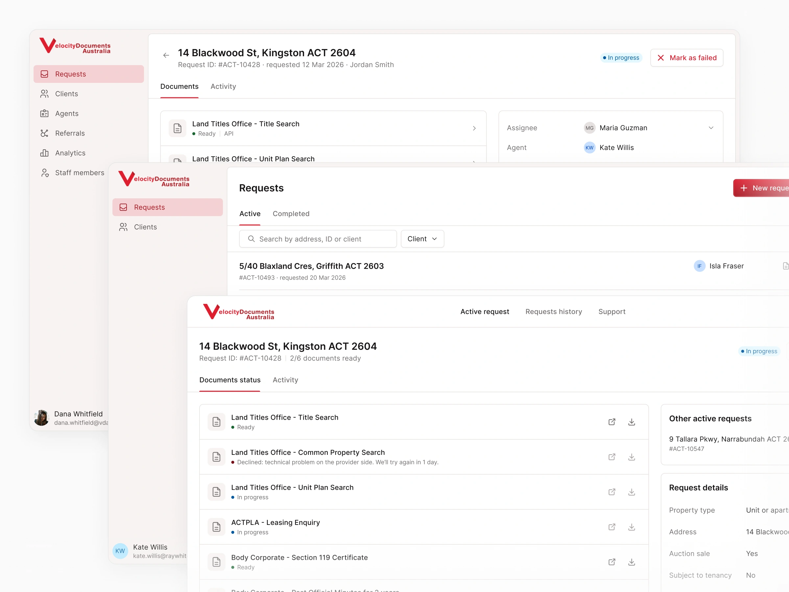
Start from the address
Which searches a sale needs, and which providers return them, depends on the state and the type of property. The old site made people work that out themselves: pick a state on one screen, a contract type on the next, and only later type the address into separate fields. I proposed starting from the address instead. The seller searches for it, the state follows from it, and the property type is one dropdown. If the search can’t find the address, they can drop a pin on the map or enter it by hand, so nobody gets stuck on the first step.
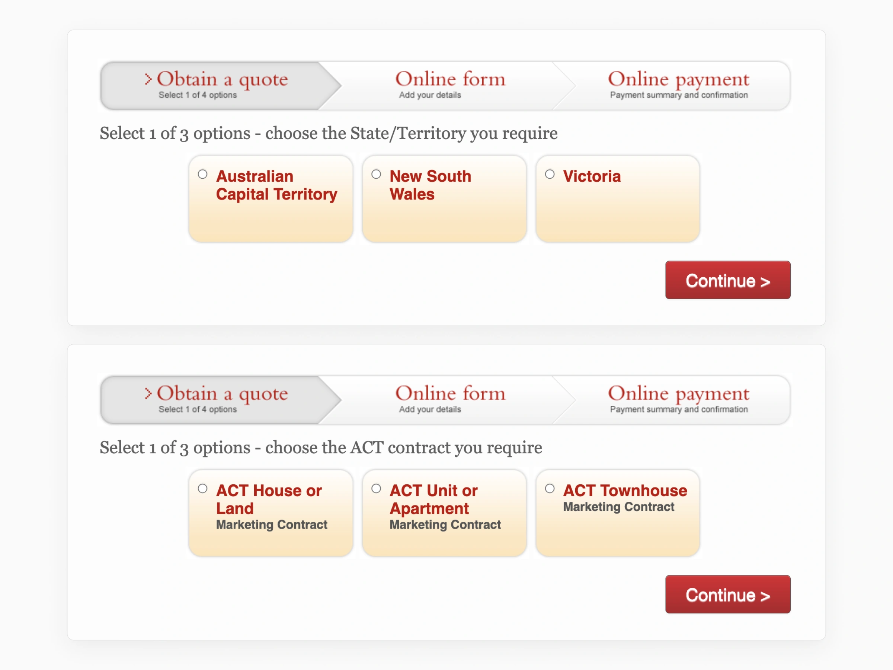
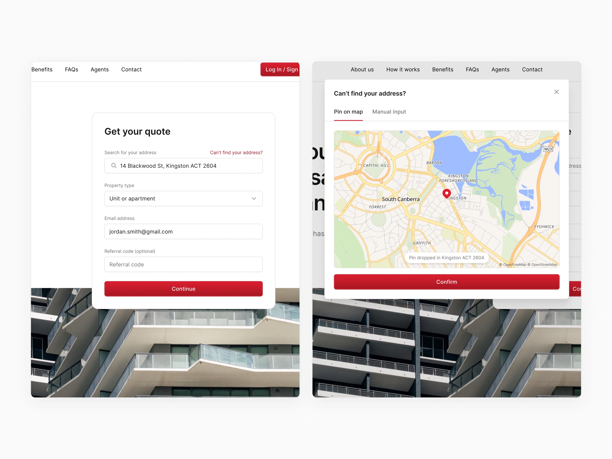
An account before payment
On the old site a seller filled in one long form, paid, and then waited for an email. I moved email confirmation to the first step after the quote, so the account exists before any money is taken. After paying, the seller lands straight on their request page and can follow each document, instead of searching the inbox.
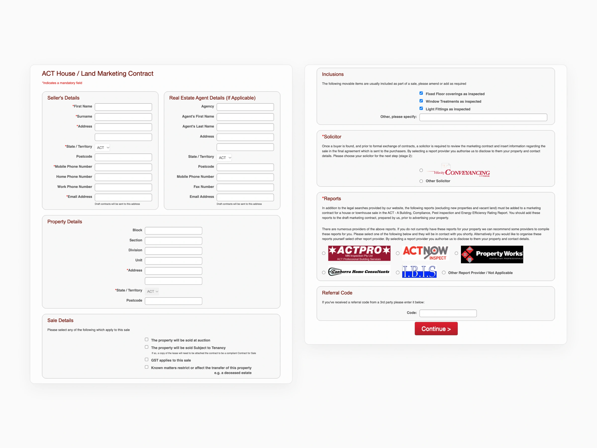

Trade-off
Search fees depend on the council, so the client shows prices as a range. I would rather show one figure, but that is how their pricing works. I kept the caveat only on the property step, where the answers can still change the price, and left it off the payment screen.
A design system built with the product
There was no design system, not even a minimal one: the client had a few brand materials and their old website. I set up colour, type, spacing and shadow tokens in Figma, 140 primitives and 71 semantic tokens, and drew the first components there. Because the screens kept changing while the scope was being cut, I finished the components in code. The tokens moved over one to one, and the default Tailwind scales were removed, so a colour or size outside the system simply doesn’t exist in the code.
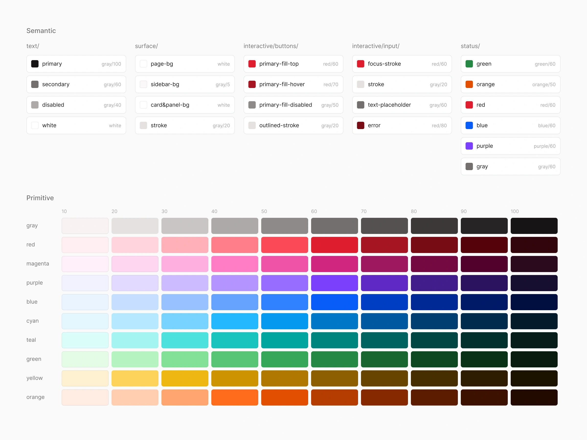
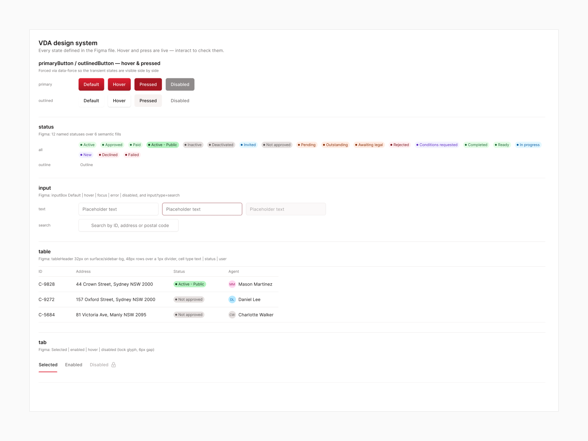
What we left out
Seller AML checks and the Victorian disclosure statement moved to later phases. The separate legal review step was dropped: the staff who put the package together also check it.